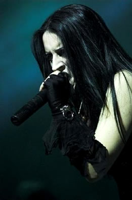
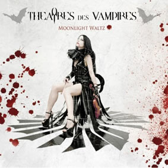

Entrevista
da vocalista Sonya Scarlet à Metal Imperium - Dezembro de 2010
De
que forma surgiu o interesse pelo vampirismo e a idéia
de escrever sobre esse tema?
Nós partilhamos esta obsessão
desde o início. Eu não sei como, mas vampiros
chamam vampiros e nós nos encontramos há muito
tempo atrás. Theatres des Vampires é o único
que nasceu a partir desse encontro misterioso e fascinante e
agora não podemos viver sem isso.
Vocês
têm uma imagem em palco condizente com a música.
O mais importante é a música, a imagem, ou a combinação
de ambas?
Eu sempre tive necessidade de me expressar
em minhas letras. Eu estou no palco desde os cinco anos e o
ballet clássico e teatro ensinaram-me como fazê-lo
apesar da voz, o corpo e as roupas. Eu sou designer de moda,
também por isso é muito natural e importante para
mim ser como você vê durante o show. Sou eu com
as minhas emoções, estilo de vida, cultura e atitude.
As minhas roupas são a minha segunda pele, o meu lado
negro, o mais inocente.
O Theatres
des Vampires irá se apresentar em Portugal no dia 15
de Janeiro no Mangualde Hard-Metal Fest. Quais são
as expectativas para esse concerto? O que os fãs podem
esperar?
O Festival de Mangualde é uma data
muito importante para nós. A cortina vermelha subirá
acima de nós imediatamente após o lançamento
de Moonlight Waltz. Será o nosso primeiro concerto
com o novo repertório que contará com as músicas
antigas e as novas. Estamos muito contentes por iniciarmos a
nossa turnê em Portugal. Na última vez tivemos
alguns problemas aí, por isso queríamos voltar
e dar o nosso melhor. Não tenho expectativas em particular
porque sempre adorei o que faço e faço-o por mim,
cantando a minha música em todo o lado, isso é
o melhor de tudo. Quero apresentar o nosso último trabalho
para todos os fãs presentes, tocar as nossas novas músicas,
apreciar o festival e beber o teu sangue, é claro...
Precisamos de nos alimentar.
Vocês
já tocaram aqui em 2007. O que conhecem de Portugal e
do nosso metal?
Em Portugal, nós não dividimos
o palco com muitas bandas, por isso não posso dizer muito
sobre experiências pessoais, mas eu posso seguramente
dizer que o Metal está crescendo rapidamente em Portugal.
Muitas bandas nasceram mantendo o Metal vivo e vocês têm
uma grande banda: o Moonspell; e eu adoro.
Em janeiro
de 2011 vocês vão lançar o novo álbum
intitulado Moonlight Waltz. O que podemos esperar desse
álbum? O que nos pode revelar?
O nosso novo álbum tem uma sonoridade
forte, com uma atmosfera sombria e intensa e nós demoramos
muito tempo para materializar. Decidimos levar as coisas ao
nosso ritmo, sem qualquer pressão ou pressa, permanecemos
no estúdio Temple of Noise 24 horas por dia
verificando tudo a toda a hora, trazer algo novo todos os dias
porque consideramos Moonlight Waltz um dos álbuns
mais importantes da nossa carreira. Nós nunca começamos
um álbum com uma linha precisa a ser seguida, apenas
deixamos que nossas emoções e experiências
de vida venham de cima e falando entre nós diferentes
idéias e desenvolvimentos.
Sobre o último álbum eu dediquei algumas das letras
para o mágico poder de sedução feminino.
Carmilla, Black Madonna, Medusa,
três mulheres fortes, com um poder de puro charme e sedução
que coloca os homens fora de si. Elas são belas feiticeiras,
mas com uma grande tristeza nos seus corações.
Black Madonna fala sobre Maria Madalena, o pecador
e o santo, o Santo
Graal e a prostituta, a rainha do mistério,
a Salomé... Moonlight Waltz é dedicado
a Christina Rosetti, uma talentosa poetisa inglesa que eu adoro
profundamente. As minhas palavras e a sua poesia "A lua
está cansada?" caminham em conjunto para criar uma
pousada para a lua, a minha amante pálida.
Por que escolheram
o tema Carmilla para o videoclipe de apresentação
do novo álbum? Do que fala essa música?
David
Bracci, o nosso diretor de vídeo, adora filmes de terror
e fica louco com os efeitos especiais, onde ele é o maestro
indisputável. Ele tem uma grande cultura sobre este tipo
de filmes e uma vasta experiência em diferentes e importantes
sets de filmagem. É perfeitamente compreensível
o sentimento que nos une há tanto tempo. Carmilla
é o nosso melhor vídeo. Adoramos o som desde o
início, por isso decidimos fazer um vídeoclipe
que mostra a história da vampira Carmilla. Nós
tivemos uma boa equipe que nos acompanhou neste projeto, dando
o seu melhor. Apaixonei-me por este romance há anos.
A personagem Carmilla é encantadora, poderosa, misteriosa
e sedutora ao mesmo tempo. O vídeo conta parte da sua
história, retirada do romance de Joseph Sheridan Le Fanu
e o nosso diretor David Bracci deu a sua própria interpretação
com a ajuda do talentoso ator Abraam Fontana, que também
realizou a Paixão de Cristo dirigido por Mel
Gibson e o resultado é Theatres des Vampires.
Nós filmamos o novo vídeo em dois castelos diferentes
da floresta em redor de Ceccano, uma pequena e antiga cidade
não muito longe de Roma. Estes castelos são realmente
maravilhosos. Um deles está completamente abandonado
e já foi absorvido pela vegetação. Este
é um local mágico e obscuro.
Quais são
os planos e objetivos para o próximo ano? Vão
tocar muito ao vivo para promover o novo álbum?
Neste momento estamos planejando umas
turnês. Vamos tocar por toda a Europa, América
do Sul, Rússia e mais. Todos os concertos irão
ser divulgados nos próximos dias. Iremos dar mais detalhes.
O Theatres
des Vampires é essencialmente uma banda de metal, mas
tiveram várias mudanças na sonoridade de álbum
para álbum embora mantendo a sua identidade. Foi sempre
um objetivo evoluir e adicionar elementos diferentes ao som
ou isso foi acontecendo com naturalidade?
Eu acredito na evolução humana
e nas experiências de vida, nunca poderemos ser a mesma
pessoa de 10 anos atrás porque passamos todos esses anos
vivendo a nossa vida da melhor maneira: viajar pelo mundo, ler
livros, sentir alegrias e dores e no interior da nossa música
pode sempre encontrar as nossas almas e nossas vidas. A nossa
música é a nossa atitude, nós somos o que
tocamos; por isso irá sempre ouvir coisas novas e diferentes
através da nossa música, mas o juramento negro
ainda arde dentro dela. Estamos mais conscientes do que somos,
do que queremos e como podemos fazê-lo e isso não
significa ter um som mais agressivo. Estivemos muito atentos
à orquestração e ao som de cada instrumento.
Desejamos um crescimento, ir fundo cada momento, em cada nota
das nossas músicas e desenvolver plenamente cada tema
sem perder a nossa atitude natural para criar atmosferas góticas
e o nosso som.
Quer deixar
uma última mensagem aos nossos leitores e aos vossos
fãs portugueses?
Obrigado pelo interesse e apoio de vocês.
Estamos ansiosos por voltar a Portugal novamente para um novo
capítulo e conhecer os nossos fãs por aí.
Obrigado pela entrevista!
Sangue é vida.
Beijos sangrentos.
Extraída
de www.metalimperium.com